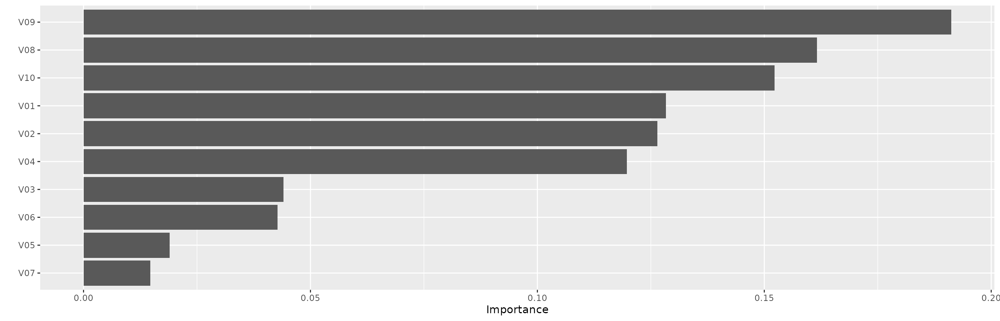
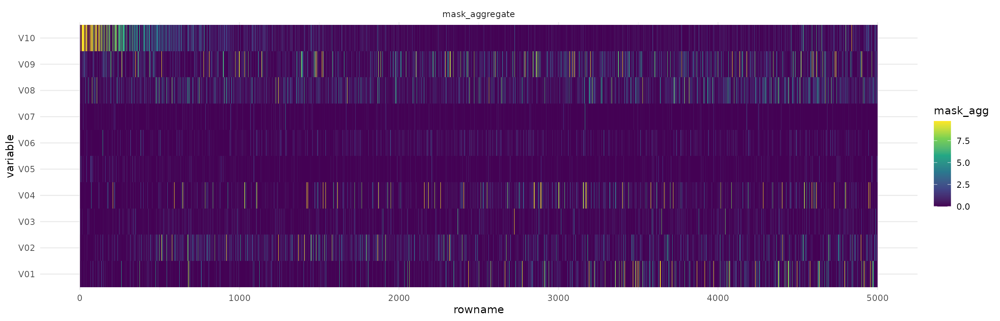

library(tabnet)
library(tidyverse, warn.conflicts = FALSE)
#> ── Attaching core tidyverse packages ──────────────────────── tidyverse 2.0.0 ──
#> ✔ dplyr 1.1.4 ✔ readr 2.1.5
#> ✔ forcats 1.0.0 ✔ stringr 1.5.1
#> ✔ ggplot2 3.5.1 ✔ tibble 3.2.1
#> ✔ lubridate 1.9.3 ✔ tidyr 1.3.1
#> ✔ purrr 1.0.2
#> ── Conflicts ────────────────────────────────────────── tidyverse_conflicts() ──
#> ✖ dplyr::filter() masks stats::filter()
#> ✖ dplyr::lag() masks stats::lag()
#> ℹ Use the conflicted package (<http://conflicted.r-lib.org/>) to force all conflicts to become errors
set.seed(1)
torch::torch_manual_seed(1)TabNet claims to be an interpretable model because the underlying neural network architecture uses feature selection masks that can help identify which features were used at each step.
The paper also defines an aggregate measure that combines the masks of each step into a single measure.
Note that the selection of important features in the masks is done instance-wise. Thus, you can identify, for each observation, which features were considered relevant .
Experiments
To show how to use the interpretation tools of tabnet,
we are going to perform 2 experiments using synthetic datasets very
similar to those that were used in the paper.
Datasets
First, let’s define the functions that we will use to generate data:
make_syn2will generate a dataset with 10 columns, but only columns 3-6 are used to calculate theyresponse vector. This is similar to Syn2 in the paper.make_syn4will generate a dataset with 10 columns too. The response vector depends on column 10: if the value is greater than 0, we use columns 1-2 to compute the logits, otherwise we use columns 5-6.
logit_to_y <- function(logits) {
p <- exp(logits)/(1 + exp(logits))
y <- factor(ifelse(p > 0.5, "yes", "no"), levels = c("yes", "no"))
y
}
make_random_x <- function(n) {
x <- as.data.frame(lapply(1:10, function(x) rnorm(n)))
names(x) <- sprintf("V%02d", 1:10)
x
}
make_syn2 <- function(n = 5000) {
x <- make_random_x(n)
logits <- rowSums(x[,3:6])
x$y <- logit_to_y(logits)
x
}
make_syn4 <- function(n = 5000) {
x <- make_random_x(n)
logits <- ifelse(
x[,10] > 0,
rowSums(x[,1:2]),
rowSums(x[,5:6])
)
x$y <- logit_to_y(logits)
x
}Now let’s generate the datasets:
syn2 <- make_syn2()
syn4 <- make_syn4()Syn2
Let’s fit a TabNet model to the syn2 dataset and analyze
the interpretation metrics.
fit_syn2 <- tabnet_fit(y ~ ., syn2, epochs = 10, verbose = TRUE, device = "cpu")
#> [Epoch 001] Loss: 1.044368
#> [Epoch 002] Loss: 0.784014
#> [Epoch 003] Loss: 0.676509
#> [Epoch 004] Loss: 0.639690
#> [Epoch 005] Loss: 0.611583
#> [Epoch 006] Loss: 0.585100
#> [Epoch 007] Loss: 0.549167
#> [Epoch 008] Loss: 0.513818
#> [Epoch 009] Loss: 0.484044
#> [Epoch 010] Loss: 0.460407In the feature importance plot we can see that, as expected, features
V03-V06 are by far the most important ones.
vip::vip(fit_syn2)
Now let’s visualize the aggregated-masks plot. In this figure we see each observation on the x axis and each variable on the y axis. The colors represent the importance of the feature in predicting the value for each observation.
library(tidyverse)
ex_syn2 <- tabnet_explain(fit_syn2, syn2)
autoplot(ex_syn2)
We can see that the region between V03 and V06 concentrates most of the higher intensity colors, and the other variables are close to 0. This is expected because those are the variables that we considered when building the dataset.
Next, we can visualize the attention masks for each step in the architecture.
autoplot(ex_syn2, type="steps")
We see that the first step captures a lot of noise, but the other 2 steps focus specifically on the important features.
Syn 4
Now let’s analyze the results for the Syn4 dataset. This dataset is a little more complicated for TabNet because there’s a strong interaction between the variables. Depending on V10, different variables are used to create the response variable and we expect to see this in the masks.
First we fit the model for 10 epochs.
fit_syn4 <- tabnet_fit(y ~ ., syn4, epochs = 10, verbose = TRUE, device = "cpu")
#> [Epoch 001] Loss: 1.289555
#> [Epoch 002] Loss: 0.929622
#> [Epoch 003] Loss: 0.745608
#> [Epoch 004] Loss: 0.686255
#> [Epoch 005] Loss: 0.659525
#> [Epoch 006] Loss: 0.642972
#> [Epoch 007] Loss: 0.628153
#> [Epoch 008] Loss: 0.609161
#> [Epoch 009] Loss: 0.593733
#> [Epoch 010] Loss: 0.579750In the feature importance plot we have, as expected, strong
importance for V10, and the other features that are used
conditionally - either V01-V02 or V05-V06.
vip::vip(fit_syn4)
Now let’s visualize the attention masks. Notice that we arranged the
dataset by V10 so we can easily visualize the interaction
effects.
We also trimmed to the 99th percentile so the colors shows the importance even if there are strong outliers.
ex_syn4 <- tabnet_explain(fit_syn4, arrange(syn4, V10))
autoplot(ex_syn4, quantile=.995)
From the figure we see that V10 is important for all observations. We
also see that for the first half of the dataset V05 and
V06 is the most important feature, while for the other
half, V01 and V02 are the important ones.
We can also visualize the masks at each step in the architecture.
autoplot(ex_syn4, type="steps", quantile=.995)
We see that step 1 and 3 both focus on V10, but on
different additional features, depending on V10. Step 2
seems to have found some noise in V08, but also focuses
strongly on V01-V02 and V05-V06.